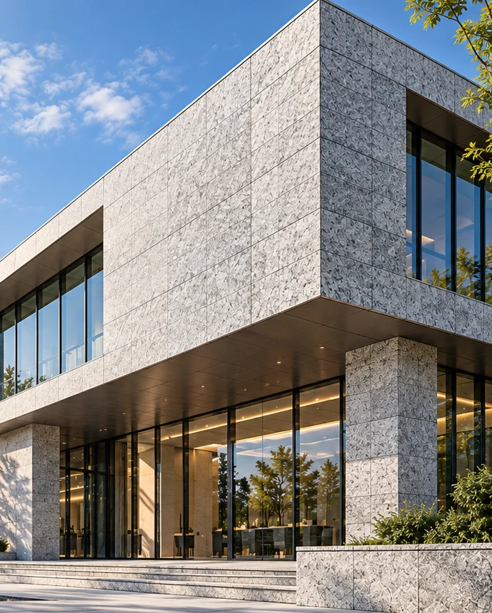
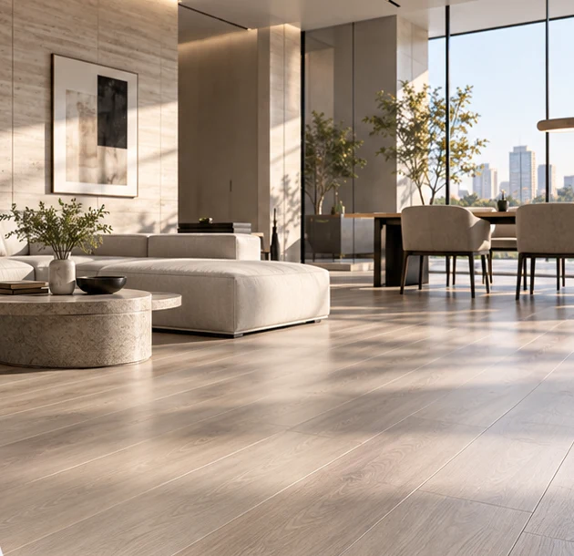
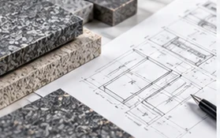

01 / EXTERIOR SYSTEM
석재단열패널
건축 외벽의 마감과 단열을 함께 고려한 패널 시스템.

01 / OUR PRODUCTS
외장, 벽체, 바닥, 공간 구획까지. 프로젝트에 맞는 제품을 만나보세요.
건축 외벽의 마감과 단열을 함께 고려한 패널 시스템.
실내 벽체의 마감과 단열을 고려한 건축자재.

석분 기반 코어를 적용한 실내 바닥재.
공공시설 및 상업공간의 화장실 칸막이 시스템.
제품 이미지는 브로슈어에서 발췌한 적용 콘셉트이며 실제 납품·시공 실적을 나타내지 않습니다.
02 / COMPANY
석산리노베이션은 건축 내·외장재의 제품개발과 제조, 품질 향상을 추구합니다.
조아패널 개업
석산리노베이션 설립 및 사업 승계
창업기업확인서 취득
03 / TECHNOLOGY & QUALITY
제품 구조와 재료, 제조방식 및 성능을 검토하여 건축자재의 완성도를 높이고자 합니다.
기획 · 설계 · 시제품 · 시험 · 개선

04 / ONLINE QUOTATION
제품과 예상 면적을 선택하여 견적 요청 내용을 준비하세요.
예상 필요 면적
개발용 시안입니다. 실제 견적 접수는 아직 연결되지 않았습니다. 예상 면적은 참고용으로, 최종 산출은 제품 및 현장 조건에 따라 달라집니다.